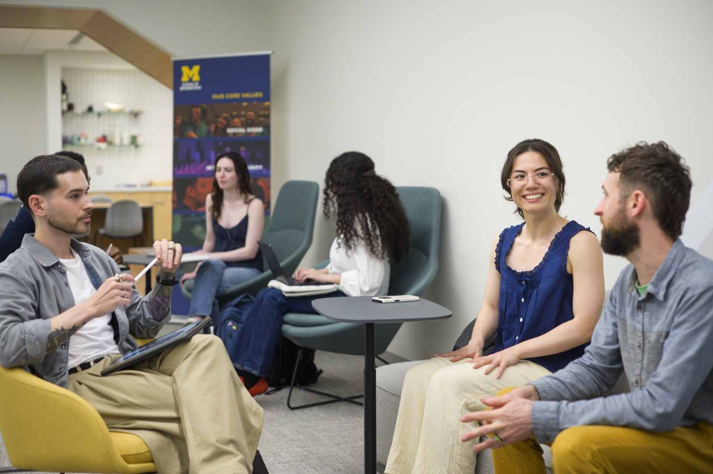
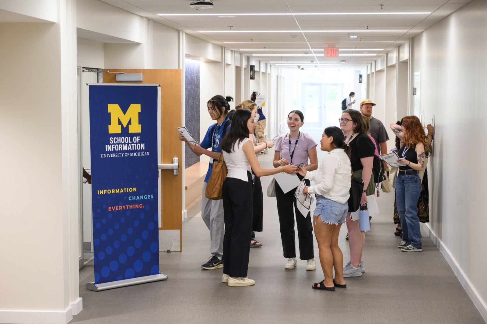

Engaged Learning Resources for UMSI Students
Build Skills Through Real-World Experience
The UMSI Engaged Learning Office connects students with opportunities to apply classroom knowledge to real challenges. This site guides you through the early stages of an engaged learning project and connects you with campus organizations that can support your work.


Find Guidance for Your Current Stage
Real-world projects do not always follow a perfect plan. Start with the section that matches the work your team is doing now.
-
Prepare for the Experience
Reflect on your goals and assumptions, learn about the project context, and assess your team's skills before committing to a solution.
Explore preparation guidance and resources -
Start the Experience
Establish professional communication, plan an effective kickoff meeting, clarify roles, and document shared expectations.
Plan a strong project start -
Connect with Campus Partners
Use specialized support from the Ginsberg Center, C-SEED, and the U-M Library to strengthen community engagement, ethical design, and research.
Find campus partner resources
What You Can Develop
- Professional communication: Build respectful relationships with clients, community partners, and teammates.
- Project management: Define scope, assign roles, set milestones, and respond to change.
- Ethical engagement: Consider identity, power, community context, and the people affected by project decisions.
- Reflection: Identify what you learned and explain your contribution in portfolios, resumes, and interviews.